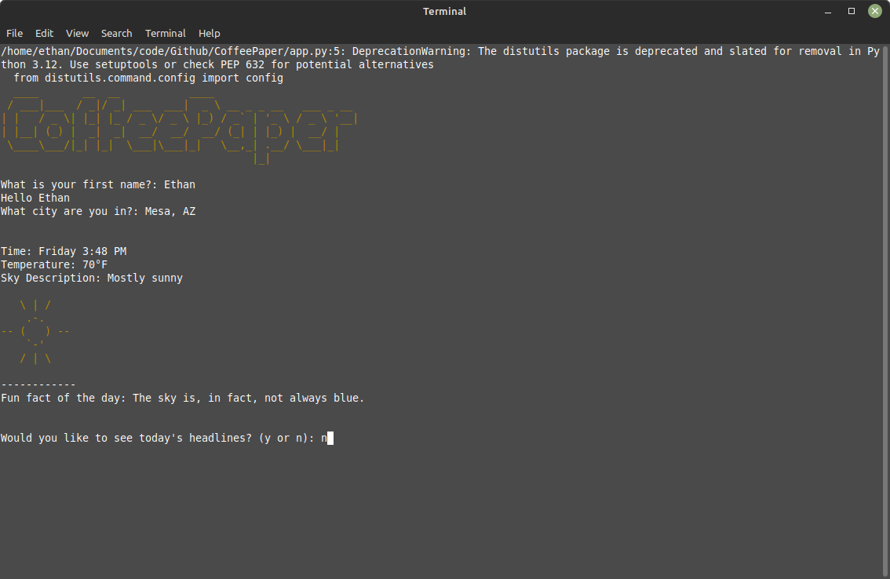

Some of My Work
Battle of the Bands Site
Objectives
A senior capstone design project, I chose to develop a site for a Battle of the Bands music
festival that would take place in Mesa, AZ. I prototyped and coded three responisve pagesfor this site.
Process
I developed a general structure for the pages by sketching them out and designing wireframes
in Figma, and developing a color and font system meanmt to reflect a punk, rock and roll tone.
After taking feedback on the initial designs I developed prototypes that I then developed into an html5
website that displays info about the festival.
Shedify UI Concept
Objectives
This project was developed for a Motion Graphics class with the objective of creating an animated
mock-up design for a mobile application. For this project I used Adobe Photoshop and After Effects in order
to design and animate the graphics. The application envisioned for this project was 'Shedify' an app for the
purchase and rental of sheds by the user, which was inspired by applications such as AirBnB and Zillow.
Process
First I developed a simple brand identity for 'Shedify', utilizing a pallette of cool greens
paired with the iconic Roboto font in a variety of font weights. I developed some basic wireframes
in Photoshop before creating a final PS project that I could import and animate into After Effects.
Effect of Color on the Perception of a Webpage
Objectives
A Human Systems research study conducted to determine how the dominant color of a webpage effects the perceptions
that a user has about a website. Conducted for my Experimental Methods for Human Systems Research course in
2021.
Process
This study looked to see if the color of a webpage
could influence a user's perception of a site. 31 participants were tested by being exposed to one
website with one of four dominant colors, and were then asked to rate how well different
qualities fit how they felt about the site. I used Amazon MTurk to pull participants and ultimatly
was not able to find significant results across the board, but did identify areas for future improvement.
Download Study Here
P.O.D. Market Site
Objectives
A conceptual website design for ASU's P.O.D. Marketplace. Featuring a scripted checkout manu and
responisve design. A work in progress to be expaned to multiple pages.
Process
Working off of a previous concept for a site with a checkout feature I developed for a javascript course
I first sketched out and created a mockup for a modern shopping website design based off of sites like walmart.com and target.com.
I then used existing brand assets and colors to develop a clean brand identity for P.O.D. Marketplace.
Personal Branding
Objectives
My brand identity and this very site have been a project in itself that has been evolving for a while, with the most
recent iteration a result of an extensive redbrand. Developing a new logo, color and font system coming together
in this homepage.
Process
Did a multi-part study and redesign process from a moodboard to drafting multiple ideas for logos and color
systems. Culminated in a final brand identity.
CoffeePaper

Objectives
A simple Python terminal app that could display weather and location information.
Designed to also display news headlines.
Process
Coded a simple Python program that writes a config file for location and name, then pulls weather data from google's weather API.
A random fact of the day is pulled from a csv list.